Massoterapeuta
Clarissa Lira
Especialista em técnicas de massoterapia personalizadas para cada necessidade. Proporcionando relaxamento, equilíbrio, conforto e bem-estar em cada atendimento..
Conheça →A Turma 68 de massoterapia formada pelo Senac, em 2026, combinam técnica e dedicação para proporcionar experiências únicas às pessoas promovendo saúde e qualidade de vida.
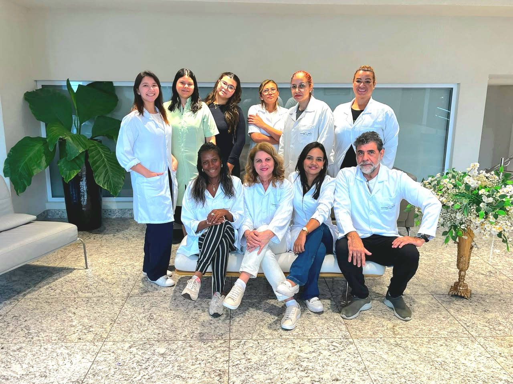
A MASSODIN nasceu para transformar o cuidado em uma experiência real de presença, acolhimento e equilíbrio.
Unimos diferentes técnicas de massoterapia a um atendimento individualizado, respeitando as necessidades e o momento de cada pessoa.
Profissionais preparados para oferecer uma experiência acolhedora e personalizada.
Especialista em técnicas de massoterapia personalizadas para cada necessidade. Proporcionando relaxamento, equilíbrio, conforto e bem-estar em cada atendimento..
Conheça →
Meu trabalho une técnicas milenares e modernas, como Tui-Na, Shiatsu Facial, Reflexologia, Pedras Quentes e Drenagem Linfática. Cada sessão é personalizada para atender às suas necessidades e proporcionar uma experiência de bem-estar.
Conheça →

Especialista em proporcionar relaxamento, aliviar tensões e estimular a circulação, promovendo equilíbrio físico e emocional. Ofereçe atendimentos de Massagem Relaxante, Drenagem Linfática e Massagem Relaxante com Modeladora.
Conheça →
Especialista em massoterapia personalizada, combinando técnicas de acordo com as necessidades de cada pessoa para proporcionar relaxamento, alívio das tensões, bem-estar e qualidade de vida.
Conheça →
Especialista em cuidados corporais femininos, com técnicas como Drenagem Linfática, Massagem Modeladora e Relaxante. Meu espaço foi pensado para proporcionar um momento de cuidado, acolhimento, relaxamento e bem-estar.
Conheça →

Especialista em Shiatsu, Tui-Na, Zen Shiatsu, Doin, Auriculoterapia e Ventosaterapia. Meu portfólio também inclui Massagem Relaxante, Massagem Esportiva e Massagem com Velas Quentes.
Conheça →Especialista em terapias integrativas para relaxamento, equilíbrio e bem-estar. Massagem Relaxante, Drenagem Linfática, Pedras Quentes, Auriculoterapia, Ventosaterapia, Aromaterapia e Cromoterapia.
Conheça →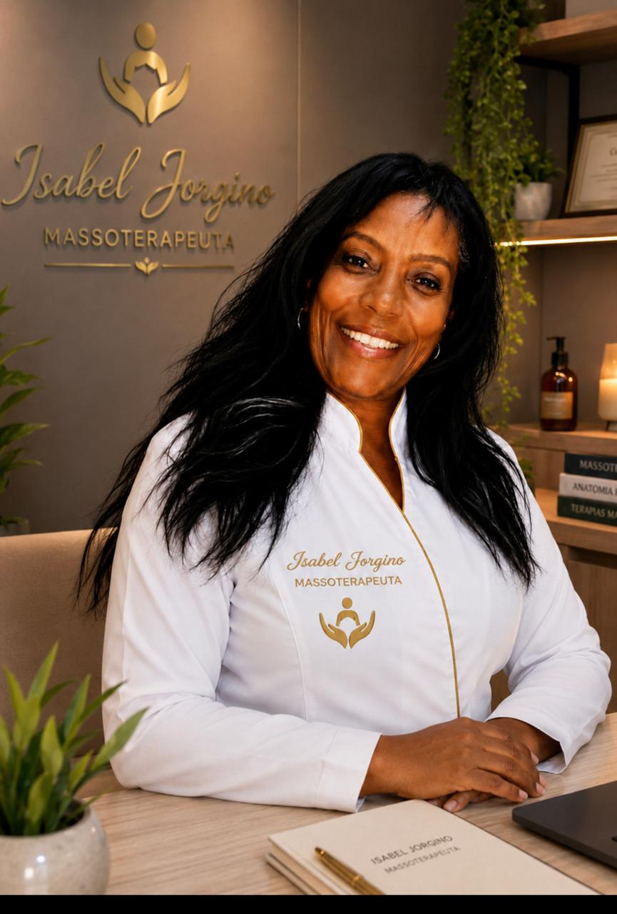
Especialista em terapias integrativas para promover relaxamento e bem-estar. Atua com Massagem Relaxante, Drenagem Linfática, Pedras Quentes e outras técnicas.
Conheça →Cada técnica possui objetivos e características diferentes. Conheça algumas das nossas opções.
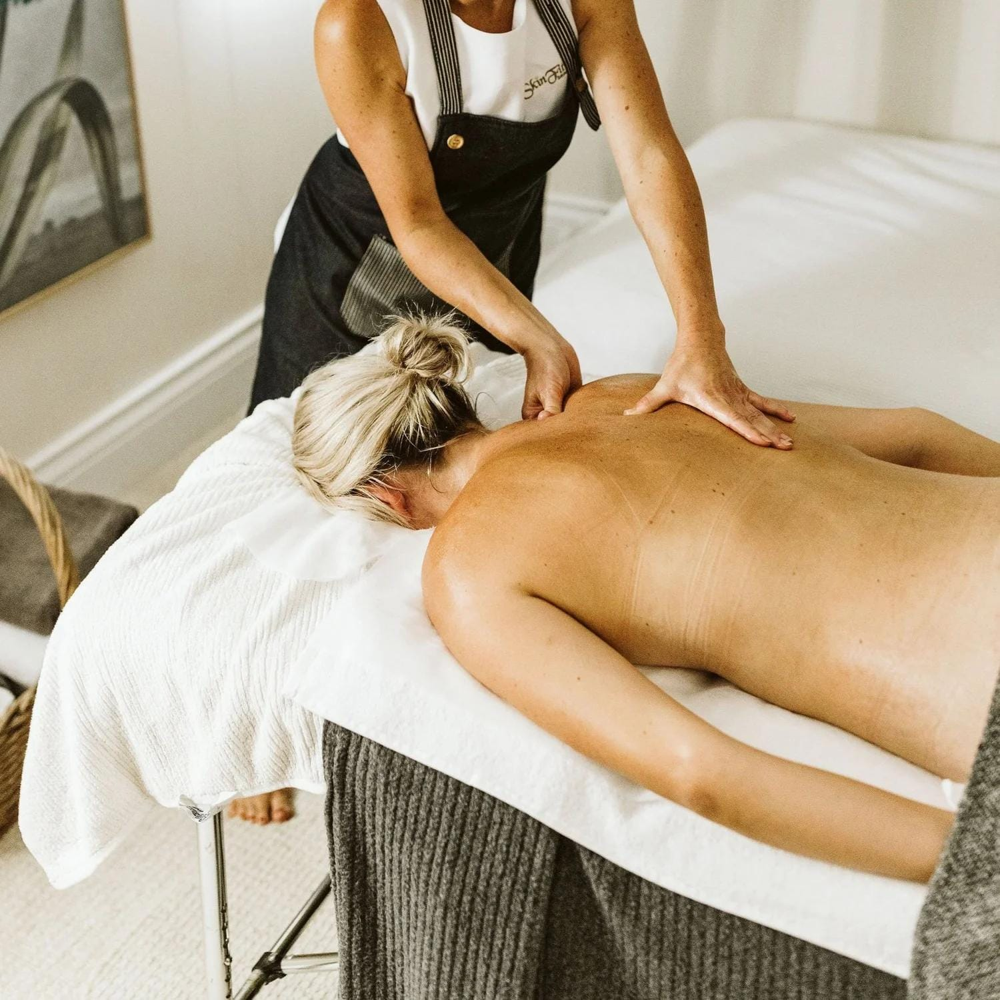
É uma das melhores técnicas para massagem corporal completa. Utiliza deslizamentos amassamentos, fricções e movimentos rítmicos. Pode ser aplicada em costas, braços, pernas, ombros, pescoço e pés. É especialmente interessante para estress e, tensão muscular e cansaço corporal. Também costuma ser uma boa opção para pessoas iniciantes na massoterapia
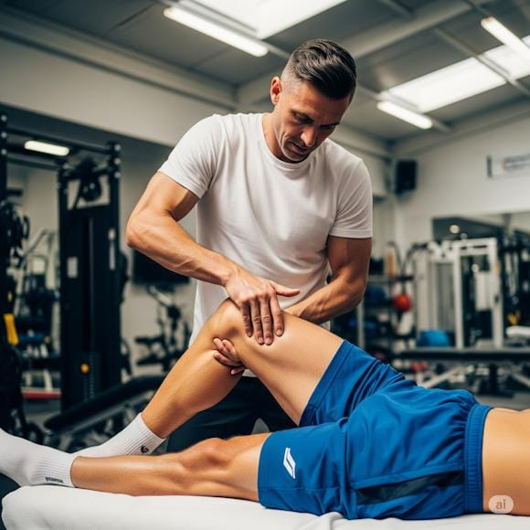
A Massagem Desportiva é voltada principalmente para atletas e pessoas que praticam atividades físicas. Utiliza manobras como deslizamentos, amassamentos, fricções, percussões e alongamentos. Pode ser aplicada antes ou depois do exercício, conforme o objetivo da sessão. Auxilia na preparação da musculatura, redução da tensão e recuperação após esforços físicos. A intensidade deve ser adaptada à modalidade esportiva e às necessidades de cada pessoa.

A Massagem com Pedras Quentes combina técnicas de massagem manual com o calor de pedras previamente aquecidas. O calor ajuda a proporcionar uma sensação agradável de relaxamento e conforto muscular. As pedras podem ser posicionadas em determinadas regiões do corpo e utilizadas durante as manobras. É muito procurada para momentos de descanso, relaxamento e redução da sensação de tensão corporal. A temperatura deve ser cuidadosamente controlada para proporcionar conforto e segurança.
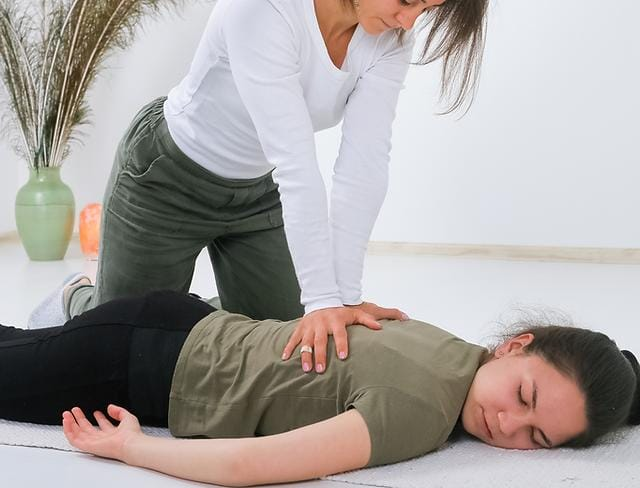
O Shiatsu é uma técnica de origem japonesa que utiliza pressão aplicada principalmente com dedos, polegares e palmas das mãos em pontos específicos do corpo. A pressão é combinada com movimentos e alongamentos, de acordo com a abordagem utilizada pelo profissional. É tradicionalmente associado ao equilíbrio corporal e energético. Pode proporcionar relaxamento, sensação de bem-estar e redução da tensão muscular. A aplicação deve respeitar os limites e as condições individuais do cliente.
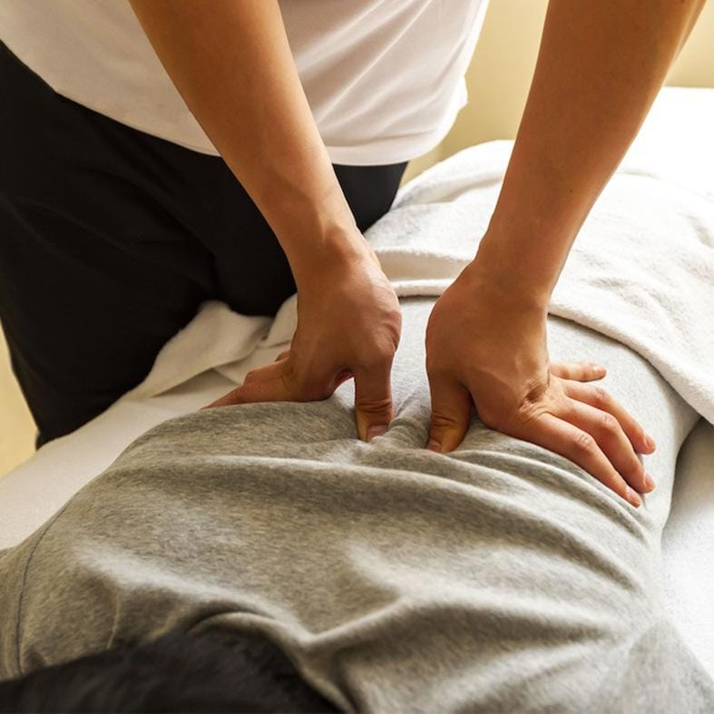
A Tuiná é uma terapia manual tradicional chinesa que utiliza diferentes técnicas, como pressão, amassamento, deslizamento e mobilização. O trabalho pode ser realizado sobre músculos e outras estruturas corporais, utilizando movimentos mais firmes e rítmicos. Tradicionalmente, está relacionada aos princípios da Medicina Tradicional Chinesa e ao equilíbrio do fluxo de energia. Pode favorecer o relaxamento e a percepção de redução das tensões corporais. A técnica deve ser adaptada às necessidades de cada pessoa.
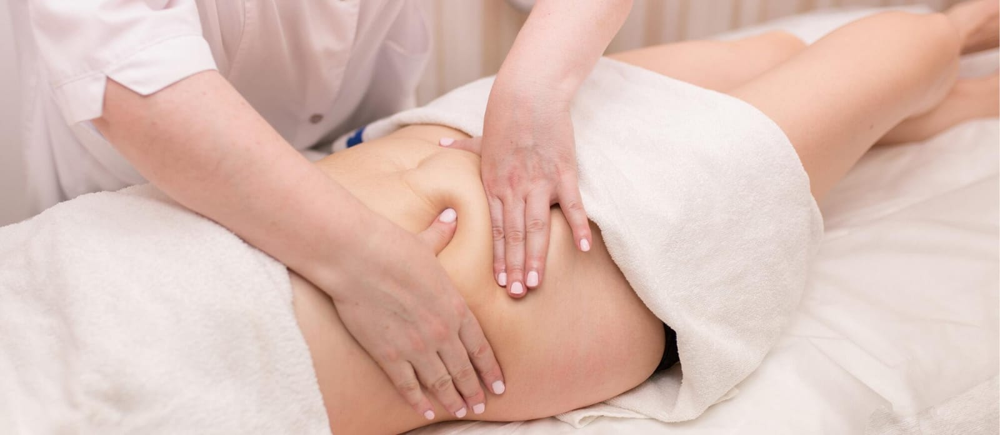
A Massagem Modeladora é uma técnica de massagem corporal estética que utiliza movimentos firmes, rápidos e direcionados. Pode envolver manobras de deslizamento, amassamento e outras técnicas manuais. É utilizada principalmente em protocolos estéticos voltados para o contorno corporal e aparência da pele. A percepção de resultados pode variar de acordo com cada pessoa e deve ser associada a hábitos saudáveis. A aplicação precisa respeitar os limites individuais e as condições de saúde do cliente.
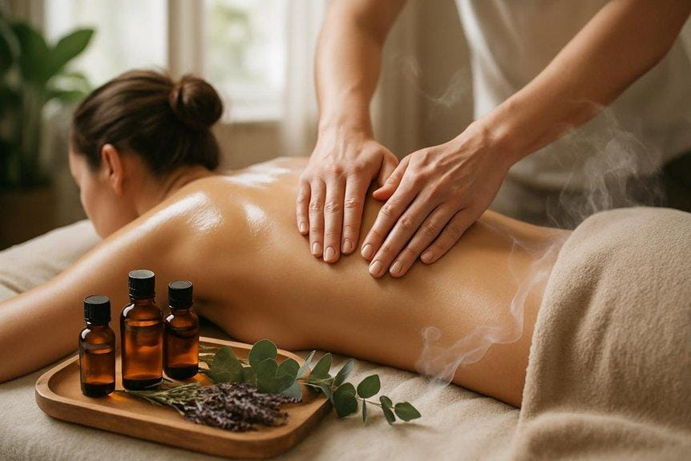
A Aromaterapia utiliza óleos essenciais e seus aromas como parte de práticas de bem-estar e relaxamento. Os óleos podem ser utilizados, conforme o produto e a orientação adequada, em difusores, inalação ou associados a massagens. Diferentes aromas são tradicionalmente escolhidos de acordo com o objetivo desejado, como relaxamento ou sensação de disposição. É importante utilizar produtos apropriados e observar cuidados relacionados à diluição, pele, alergias e formas de aplicação.
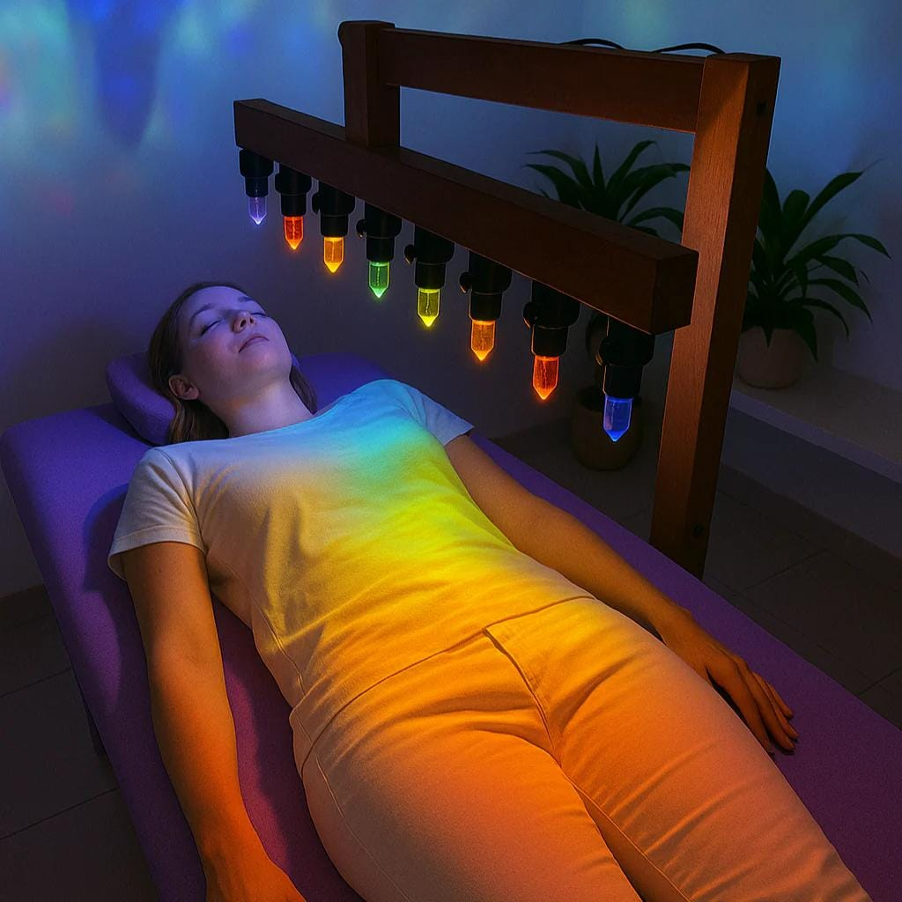
A Cromoterapia utiliza diferentes cores como elemento complementar em práticas de relaxamento e bem-estar. Cada cor é tradicionalmente associada a determinadas sensações e significados dentro das diferentes abordagens da técnica. Durante uma sessão, podem ser utilizadas luzes coloridas ou outros recursos visuais. A prática pode contribuir para criar um ambiente acolhedor e favorecer momentos de relaxamento. É importante apresentá-la como uma prática complementar, e não como substituta de tratamentos médicos.
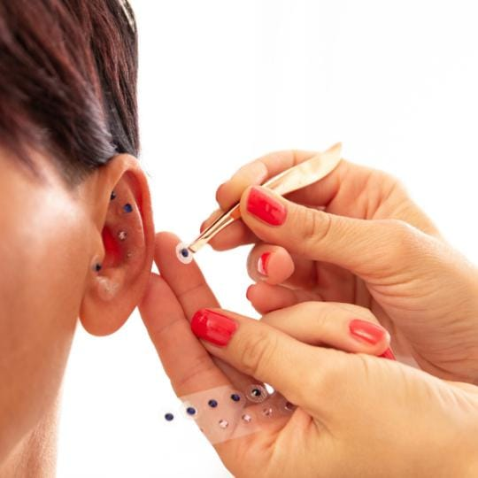
A Auriculoterapia é uma prática terapêutica que utiliza pontos específicos da orelha como parte de uma abordagem complementar. Esses pontos podem ser estimulados por sementes, esferas, agulhas ou outros recursos, conforme a formação do profissional. A técnica é tradicionalmente relacionada à Medicina Tradicional Chinesa e pode ser utilizada em protocolos de bem-estar. A aplicação deve ser realizada por profissional capacitado, respeitando os cuidados de higiene e segurança.
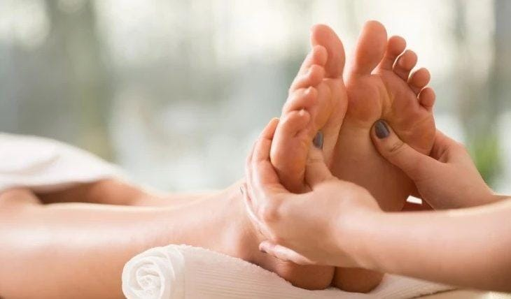
A Reflexologia, especialmente a Reflexologia Podal, utiliza técnicas de pressão e massagem em áreas específicas dos pés. A prática parte do princípio tradicional de que determinadas regiões dos pés estão relacionadas a diferentes partes do corpo. É muito utilizada como recurso complementar para relaxamento, conforto e sensação de bem-estar. Durante a sessão, o profissional realiza movimentos e pressões de acordo com a técnica escolhida.
Fale com nossa equipe e encontre o atendimento ideal para você.